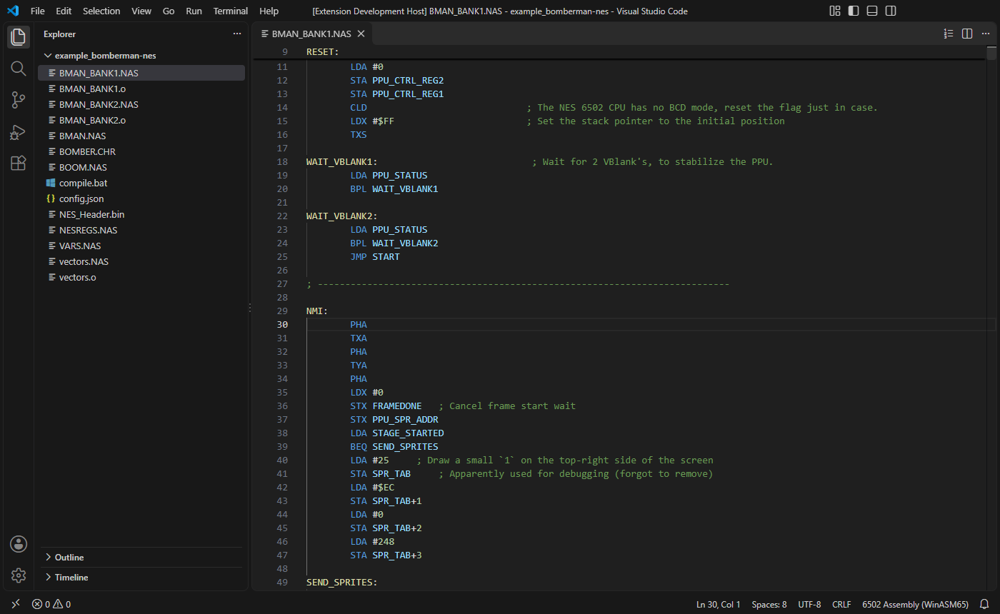
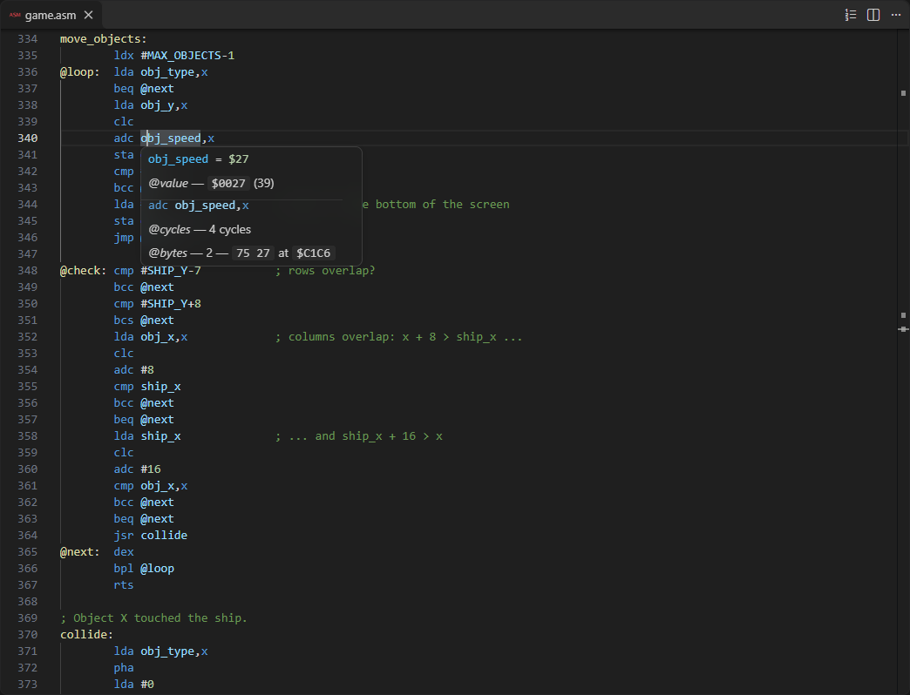
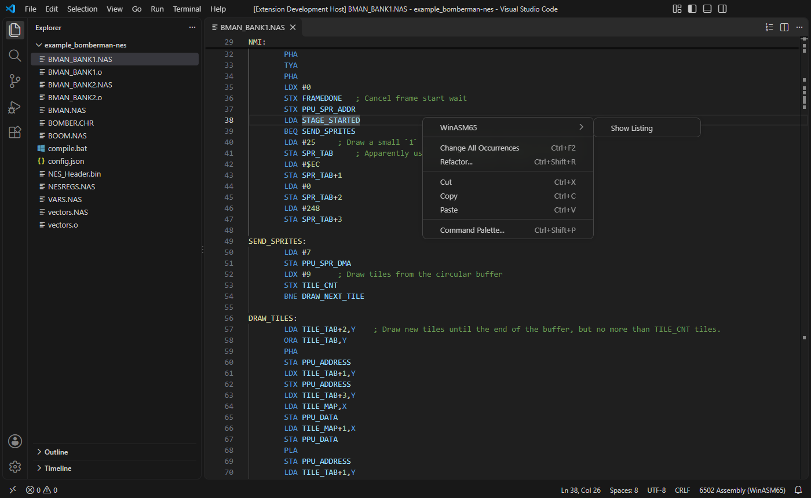
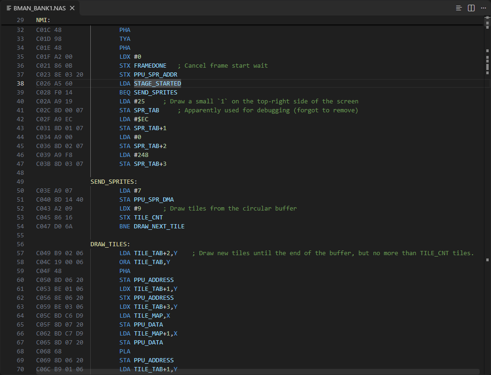
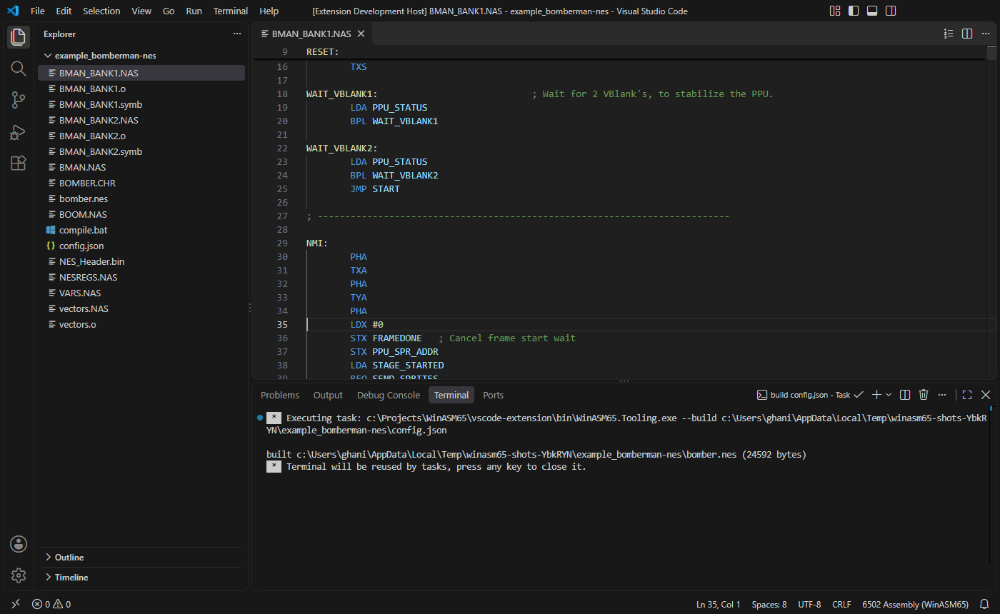
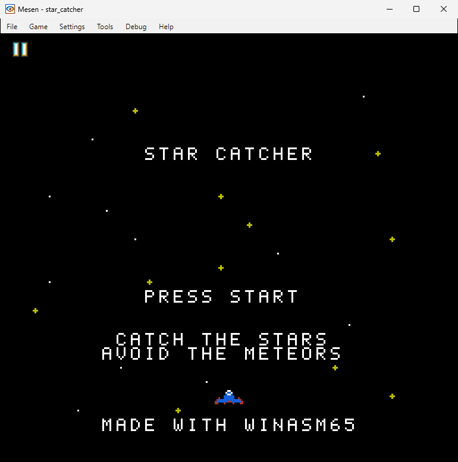
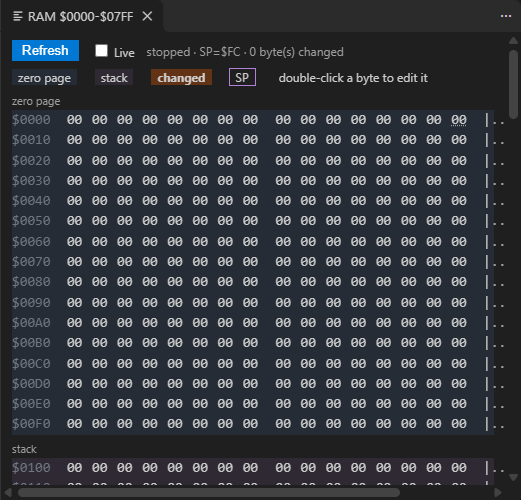
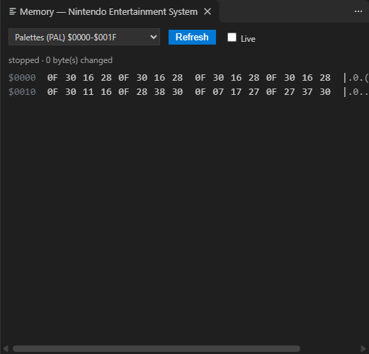

VS Code extension
Syntax colouring, errors as you type, hover cards, a listing column, a build task, a source-level debugger that runs the program in an emulator (Mesen2 for the NES, or any emulator with a WinASM65 bridge), a Memory panel, and the WinASM65 tools offered to VS Code's AI agents. The TypeScript side is thin: almost everything is done by WinASM65.Tooling, which the extension ships and starts.


example_star_catcher), in VS Code. .nas and .asm files open as “6502 Assembly (WinASM65)”, shown at the right of the status bar.Install
The extension is packaged for Windows x64 only (vsce package --target win32-x64) and needs VS Code 1.85 or later. Build and install it from the repository:
cd vscode-extension
npm install
npm run package
code --install-extension winasm65-win32-x64-0.4.1.vsix --forceThe version in the file name is the version of package.json (0.4.1 at the time of writing). --force replaces an installed copy of the same version. What npm run package does is described in Packaging.
To debug you also need an emulator with a WinASM65 bridge: Mesen2 2.1.1 for the NES, or another one configured in the project (see Emulator bridges). Give its path in one of three places, read in this order:
"emulatorPath"inlaunch.json;- the
winasm65.emulatorPathsetting (copied into the launch configuration when it has none); Emulator.Pathin the project'sconfig.json.
Which emulator it is (Emulator.Name: mesen2, mesence or a custom name) and which bridge script it loads come from the same Emulator section, and can be overridden by the emulator and bridge attributes of launch.json. Without a name, a Mesen.exe is taken for Mesen2.
The WinASM65 Graphics Designer is a separate extension that depends on this one: editors for tiles, palettes, screens, maps and metasprites, pictures in the hover of exported labels, and a live preview through this debugger. See Graphics Designer.
Close Mesen2 before pressing F5. Mesen2 runs as a single instance: a second launch is handed to the window already open, and the bridge never listens on the port the adapter waits on. The adapter notices that the new process exited and says so.
The first launch writes the settings.json entries Mesen2 needs to let the bridge script open a socket, next to Mesen.exe.
Highlighting
The TextMate grammar syntaxes/winasm65.tmLanguage.json (scope source.winasm65) colours:
| Rule | Scope |
|---|---|
comments (;) | comment.line.semicolon |
| strings, characters | string.quoted.double, string.quoted.single |
label definitions (NAME:, or a name in column 0 before a mnemonic) | entity.name.function.label |
directives, EQU | keyword.control.directive |
| mnemonics | keyword.other.mnemonic |
| numbers | constant.numeric.hex / .binary / .decimal |
X/Y after a comma, A as operand; * as program counter | variable.language.register, variable.language.pc |
# and operators | keyword.operator.immediate, keyword.operator |
| scope braces, other names | punctuation.section.block, variable.other |
The grammar is checked by GrammarTests: it must colour exactly the mnemonics of the assembler's opcode tables and the directives the engine dispatches, no more and no fewer. language-configuration.json declares ; as the line comment, the bracket pairs, and a word pattern in which $C01A, %0101, @local and .scoped.name are single words.
Hover
The language server answers hovers with a card laid out like a JSDoc hover. It is computed from the unsaved text, so it is right while you type.



obj_speed is a zero-page variable (.res from .memarea $0000), so the instruction took the two-byte zero page,X form.The cycle column uses short marks explained under the table: +p one more cycle if a page is crossed, +b for a branch taken, +d in decimal mode. The instruction set is the CPU of the project's target. How the card is built: Tooling › Hover cards. While a debug session is paused, VS Code can also show a name's current value on hover, through the adapter's evaluate.
Diagnostics

- On open and on save the whole project is built. Its diagnostics are exact for every unit and every included file, and an error fixed in a file that is not open disappears from the Problems panel too.
- While typing (250 ms after the last key) the unsaved text of a unit is assembled against the names the last build saw. A name defined in another unit is not an error. Until a build has succeeded, “Undefined symbol” is held back, since the name may be defined in another unit.
- Included files are checked only by the build, on save: only the build knows the context an include is read in.
- A file that no
config.jsongoverns is assembled on its own.
The details, including how the governing config.json is found: Tooling › Language server. Set winasm65.languageServer.enabled to false to turn the language server off; hover, diagnostics and the listing column then go with it.
Listing column




.lst file. Lines without code get a blank column, so the source stays aligned.src/listing.ts draws the column as a before decoration on every line, in the colour of the line numbers (editorLineNumber.foreground). The column is 14 characters wide, made of non-breaking spaces: four address digits and at most three bytes, followed by … when the line emitted more than three bytes or more than once (a macro, a repeat).
- Data. The rows come from the language server's custom request
winasm65/listing, which lists a unit from its unsaved text, so the column follows the edit. An included file is listed from the last successful build. See the request. - Refresh. When an editor becomes visible (at once), 300 ms after a change, and 500 ms after a save (the server rebuilds the project on save, which is what an include's column comes from).
- State. Shown or hidden is remembered per workspace (
workspaceState) and exposed as the context keywinasm65.listingVisible, which decides whether menus offer Show or Hide. Started from the Explorer, Show Listing first opens the file. - Log. The WinASM65 output channel records each refresh (“listing: <n> row(s) for <file> in <n> editor(s)”) and any failure.
Build task


WinASM65.Tooling --build; errors go to the Problems panel.BuildTaskProvider finds up to 20 config.json files (outside node_modules) and offers one task per file, named build <relative path>, in the Build group, run in the project's directory. The output is file:line: error: message, which the $winasm65 problem matcher turns into problems. A task can also be written in tasks.json:
{
"type": "winasm65",
"config": "${workspaceFolder}/config.json",
"problemMatcher": "$winasm65",
"label": "build"
}Debugging

game.asm, the first instruction of the NMI handler ($C06E). Left: the Registers and Flags (Zero page follows below them), and a one-frame call stack named after the nearest label. Right: the Memory panel's RAM view, on the title screen: ship_x and ship_y at $07–$08 hold $78 and $C8 (120, 200), and ptr at $15 still points at spr_ship ($C9E1), the last metasprite drawn. Bottom: the debug console's account of the launch.

F5 in a folder with a config.json is enough: without a launch.json, the extension's ConfigurationProvider picks the config.json closest to the file being edited (walking up at most 8 directories), else the first one in the workspace, and fills in a launch configuration. With none it says “No config.json found”. To keep a configuration, add one to launch.json; the snippets WinASM65: Debug and WinASM65: Attach write these, and the emulator is the one the project configures:
{
"type": "winasm65",
"request": "launch",
"name": "Debug",
"config": "${workspaceFolder}/config.json"
}
{
"type": "winasm65",
"request": "attach",
"name": "Attach",
"port": 45678,
"config": "${workspaceFolder}/config.json"
}A launch may also name "emulator" (mesen2, mesence, or any name for a custom emulator), "emulatorPath" and "bridge" (a bridge script, relative to config.json). Every attribute and its default is in Tooling › Launch and attach arguments. What the session offers:
| Feature | Behaviour |
|---|---|
| Breakpoints | In the gutter of any winasm65 file. One set on a label or a comment moves to the next line with code (up to 5 lines down). In a banked ROM it stops only in the bank of its line. |
| Stepping | Continue, pause, step into (one instruction), step over (runs a JSR to its return), step out (to the return address on the stack). |
| Variables | Registers (PC A X Y SP PS cycles), Flags (N V B D I Z C), Zero page in rows of 16 bytes. |
| Memory | The 64 KiB address space in VS Code's hex view, opened from PC, SP or a zero-page row. Bytes can be edited there. |
| Debug console | A name, a register or $0010 shows its value. Monitor commands (CPU, READ $0200 16, BREAK LIST, …) go straight to the monitor; prefix any line with > to force that. |
| Stop | Stopping the session kills the emulator it started; detaching from an attached emulator resumes it. Closing the emulator ends the session. |
Memory panel


$0000-$07FF of the CPU's memory, in hex and ASCII, the zero page and stack shaded.src/memoryPanel.ts shows the machine's memories in a webview beside the editor, titled Memory — and the system's name. Which memories it offers comes from the debug adapter (winasm65.system): the views the system definition proposes, chosen in a list. On the NES: RAM, PRG ROM, nametables (PPU), palettes (PAL), sprites (OAM) and tiles (CHR); a view whose memory the emulator's bridge does not offer is marked “not offered by” the emulator. An adapter that predates the request gets the 2 KiB at $0000-$07FF.
- Opens at the first stop of a WinASM65 session (setting
winasm65.ram.openOnStop), with WinASM65: Show Memory, or with its button in the debug toolbar. - Refreshes at every stop, and with the Refresh button.
- Marks the bytes changed since the previous stop (per view). In the CPU's memory it also shades the zero page and the stack, and outlines the byte at
$0100+SP. - Names: in the CPU's memory, hovering a byte shows its address, every name the build gives that value, and the value. Named bytes are underlined with dots.
- Edits: double-click a byte of a writable view, type one or two hex digits, Enter. Escape or leaving the field cancels.


PAL space. Four background palettes, then the ship's, the stars', the meteors' and the burst's.The panel talks only to the debug adapter, through session.customRequest:
| Request | When | For |
|---|---|---|
winasm65.system | once per session | the views and memories, the emulator's name |
readMemory { memoryReference, count } | every refresh of a CPU view, in chunks of 4096 bytes | the bytes |
winasm65.memory.read { space, address, count } | every refresh of another view | the bytes |
evaluate { expression: "SP", context: "watch" } | every refresh of a CPU view | the stack pointer |
winasm65.symbols { from: 0, to: 65535 } | once per session | the names |
writeMemory or winasm65.memory.write (one byte, base64) | after an edit | the change; a refusal is shown in the status line |
A DebugAdapterTracker watches the adapter's events: stopped refreshes the panel, continued marks it as running. The Live box re-reads the view every 500 ms while the panel considers the machine running; changes are then measured from the last frame shown. Since a name like SHIP_SPEED = 2 is a plain constant, a small constant can share a value with a variable's address (in Star Catcher, buttons is at $02), so the tooltip lists every name rather than guessing one.
Tools for AI agents
On VS Code 1.101 and later, src/mcp.ts registers WinASM65's MCP server with VS Code (vscode.lm.registerMcpServerDefinitionProvider, declared under mcpServerDefinitionProviders as winasm65.mcp): the Tooling found as below, started with --mcp. VS Code's agents then get the same build, debug and graphics tools as an external assistant, with VS Code asking before each tool runs. On an older VS Code nothing is registered and the log says so. The tools and how to add the server to other clients are in Tools for AI assistants.
What package.json contributes
| Contribution | Content |
|---|---|
languages | winasm65 (“6502 Assembly (WinASM65)”) for .nas and .asm, with language-configuration.json. |
grammars | source.winasm65 from syntaxes/winasm65.tmLanguage.json. |
breakpoints | Breakpoints allowed in winasm65 files. |
debuggers | Type winasm65, label “WinASM65”: launch and attach attributes (emulator offers mesen2 and mesence but takes any name), an initial configuration and two snippets. |
taskDefinitions | Type winasm65 with a required config. |
problemPatterns, problemMatchers | $winasm65: ^(.+?)(?::(\d+))?: (error|warning): (.*)$, file locations autoDetect relative to the workspace folder. |
commands | winasm65.showListing (Show Listing), winasm65.hideListing (Hide Listing), winasm65.showRam (Show Memory), all in the category WinASM65. |
mcpServerDefinitionProviders | winasm65.mcp, labelled WinASM65: the MCP server. |
submenus | winasm65.context, labelled WinASM65. |
configuration | The four settings below. |
Menus
| Menu | Item | When |
|---|---|---|
editor/context | WinASM65 submenu | the file is winasm65 |
editor/lineNumber/context | WinASM65 submenu | the file is winasm65 |
explorer/context | WinASM65 submenu | the resource is winasm65 |
winasm65.context (the submenu) | Show Listing / Hide Listing; Show Memory | listing hidden / shown; Show Memory only while a WinASM65 session runs |
editor/title | Show Listing / Hide Listing buttons | the file is winasm65 |
debug/toolBar | Show Memory button | the session is of type winasm65 |
commandPalette | Show Listing or Hide Listing | only the one that applies |
Settings
| Setting | Default | Meaning |
|---|---|---|
winasm65.toolingPath | empty | A WinASM65.Tooling executable, or a .dll run with dotnet. Empty: the copy shipped with the extension. |
winasm65.emulatorPath | empty | The emulator's executable, used when launch.json names none. It comes before Emulator.Path of config.json. |
winasm65.languageServer.enabled | true | Errors as you type, hover and the listing column. Read when the extension starts. |
winasm65.ram.openOnStop | true | Open the Memory panel the first time a WinASM65 session stops. |
The extension activates on onLanguage:winasm65, workspaceContains:**/config.json, onDebugResolve:winasm65, onDebugDynamicConfigurations:winasm65 and onCommand:workbench.action.tasks.runTask.
How the extension works
activate in src/extension.ts creates the WinASM65 log channel, registers three providers, starts the language client, creates the listing column and the Memory panel, and offers the MCP server to VS Code's agents. Each piece and what it talks to:
Finding the Tooling executable
resolveTooling returns the first of these paths that exists. A .dll is started as dotnet <dll>, anything else directly; the mode (--dap, --lsp, --mcp, --build) is appended by the caller.
- The
winasm65.toolingPathsetting. bin/WinASM65.Tooling.exeinside the extension: the copynpm run packageships.bin/WinASM65.Toolinginside the extension.../WinASM65.Tooling/bin/Debug/net8.0/WinASM65.Tooling.dll: the debug build next to the extension when it runs from the repository.
With none, starting a debug session fails with “WinASM65.Tooling was not found. Set "winasm65.toolingPath".”, the language server is not started (with a warning), and no build task is offered.
The providers
| Class | Registered as (type winasm65) | What it does |
|---|---|---|
AdapterFactory | debug adapter descriptor factory | Returns a DebugAdapterExecutable: the Tooling with --dap. |
ConfigurationProvider | debug configuration provider | When the configuration is empty (F5 without launch.json), fills in a launch of the nearest project. For any launch without emulatorPath, copies the winasm65.emulatorPath setting into it. |
BuildTaskProvider | task provider | Offers a build task per project and resolves winasm65 tasks from tasks.json, replacing ${workspaceFolder} in config. |
LanguageClient | started by startLanguageServer | The Tooling with --lsp, for file documents of language winasm65, with a file watcher on **/config.json. Skipped when winasm65.languageServer.enabled is false. |
ListingColumn | commands Show/Hide Listing | Waits for the language client, then asks it for winasm65/listing. |
MemoryPanel | command Show Memory, a debug adapter tracker | Reads and writes the machine's memories through the active WinASM65 debug session. |
registerMcpServer | MCP server definition provider winasm65.mcp | Offers the Tooling with --mcp to VS Code's agents. |
Packaging
npm run package chains three scripts of package.json:
| Script | Command | Result |
|---|---|---|
tooling | dotnet publish ../WinASM65.Tooling/WinASM65.Tooling.csproj -c Release -r win-x64 --self-contained true -p:PublishSingleFile=true -p:DebugType=none -maxcpucount:1 -o bin | bin/WinASM65.Tooling.exe, a single self-contained file (no .NET install needed), and bin/Bridge/*.lua, which WinASM65.Monitor.Core copies to every output. |
license | copies ../LICENSE.txt into the extension | The zlib licence travels in the package. |
| (vsce) | vsce package --target win32-x64 | Runs vscode:prepublish (tsc), then writes winasm65-win32-x64-<version>.vsix, about 31 MB. |
.vscodeignore keeps the TypeScript sources, source maps, compiled tests, the TypeScript and vsce packages, bin/WinASM65.exe with its runtime config, and the experimental Lua scripts (probe_mame.lua, spike_m0.lua) out of the package. The publish runs on one node (-maxcpucount:1): WinASM65 is referenced by both the Tooling and Monitor.Core, and parallel builds of it competed for the same DLL.
Developing the extension
- Run from source. Open
vscode-extension/in VS Code and press F5. The Run the extension configuration runs thecompiletask (npm run compile && dotnet build ../WinASM65.Tooling) and opensexample_bomberman-nesin an Extension Development Host (replace that folder in.vscode/launch.jsonwithexample_star_catcherto work on the example game). No package is needed:resolveToolingfinds the debug build of the Tooling. - Tests.
npm testcompiles, then@vscode/test-electronstarts VS Code with the extension onexample_nes_gameand runssrc/test/suite.tsinside it. SetVSCODE_EXECUTABLEto an installed VS Code to avoid a download. - Screenshots. The images on this page come from
tools/screenshots/shoot-all.ps1.
The protocol side (adapter, language server, build mode) is tested in .NET: see Tooling › Tests.